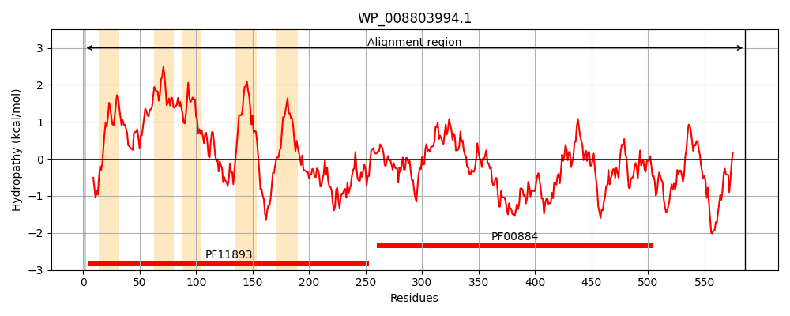
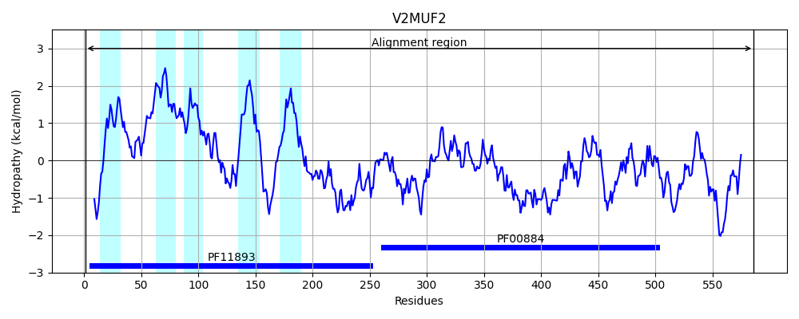
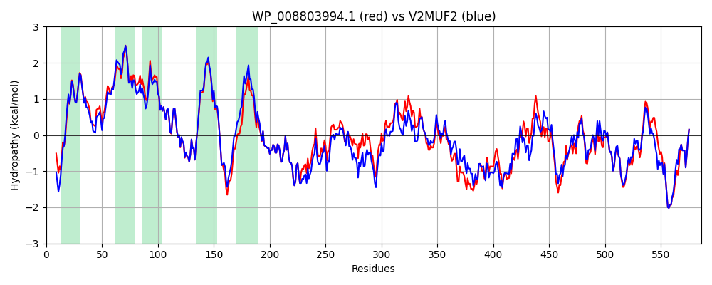

Hit Accession: V2MUF2
Hit TCID: 2.A.127.1.1
Hit Description: gnl|BL_ORD_ID|20464 gnl|TC-DB|V2MUF2|2.A.127.1.1 Hydrolase of alkaline phosphatase superfamily protein OS=Salmonella enterica subsp. enterica serovar Litchfield str. CFSAN001076 GN=CFSAN001076_18309 PE=4 SV=1
Mach Len: 586
e:0.000000
Query TMS Count : 5
Hit TMS Count: 5
TMS-Overlap Score: 4.750000
Predicted Substrates:CHEBI:3411;cardiolipin
BLAST Alignment:
Score: 2571 , Bit scores: 994 bits, E-value: 0.0e+00, Alignment length: 586, Percentage identity: 82
Query: 1 MVTLRQPYREKVSQMVSWGHWFALFNMLLAMVLGSRYLFVADWPTTLAGRLFSYVSLVGHFSFLVFTSYVLILFPLTFIVVSQRLMRFLSVILATAGMTLLLIDSEVFTRFHLHLNPVVWELVINPDQNEMARDWQLMFISVPVIFLIEMLFATWSWQKLRSLTRRRHYARPVAWFFFLSFISSHLVYIWADANFYRPITMQRANLPLSYPMTARRFLEKHGLLDAQDYQRRLVEQGAPEAVSVQYPLSNLRYRDLGAGYNVLLITVDNLNYSRFEKTMPALAAFAKENVNFTQHMSSGNTADSGLFGLFYGISPGYMDGVLSARIPAALITALNQQGYQLGLFSSDGFSSPLYRQALLSDFSLPSAKTQSDEQTANQWIGWLDRYAQDENRWFSWISLNGTTLDDTQQQGFVRRYSKAAGDVDAQIDRVLTALRAAGKLDNTVVIITGGHGKPLNVKHDSFDWSREQLQVPLVIHWPGTPAQEIATLTDNKDVMTTLMQRLLHVSTPANEYSQGEDLFSAARRRNWVTAANGDTLAITTPTITVVLNHNGTYTTWSRDGEKIKDQKPQLSLLLQVLTDEKRFIAN 586
MVT RQ YREKVSQMVSWGHWFALFN+LLA +LGSRYLFVADWPTTLAGR++SY+S+VGHFSFLVF +Y+LILFPLTFIV+SQRLMRFLS ILATAGMTLLLIDSEVFTRFHLHLNP+VWELVINPDQNEMARDWQLMFISVPVI LIEMLFATWSWQKLRSLTRRRH+ARP+A FFF+SFI+SHL+YIWADANFYRPITMQRANLPLSYPMTARRFLEKHGLLDAQ+YQRRLVEQG PEAVSVQYPLSNL YRD+G G NVLLITVD LNYSRFEK MP LA FA++N++FT+HMSSGNT D+G+FGLFYGISPGYMDGVLS R PAALITALNQQGYQLGLFSSDGF+SPLYRQALLSDFS+P+A+TQSD QTA+QWI WL RYAQ++NRWFSWIS NGT +DD+ Q+ FV+RY+ AA DVDAQI+RVL ALR AGK DNTVVIIT G G PL + + FDWS+ LQVPLVIHWPGTPAQ I LTD+ DVMTTLMQRLLHVSTPANEYSQG+D+F+ RR NWVTAA+G TLAITTP +T+VLN+NG Y T+ GEKIKDQKPQLSLLLQVLT+EKRFIAN
Sbjct: 1 MVTHRQRYREKVSQMVSWGHWFALFNILLATLLGSRYLFVADWPTTLAGRIYSYLSIVGHFSFLVFATYLLILFPLTFIVMSQRLMRFLSAILATAGMTLLLIDSEVFTRFHLHLNPIVWELVINPDQNEMARDWQLMFISVPVILLIEMLFATWSWQKLRSLTRRRHFARPLAAFFFVSFIASHLIYIWADANFYRPITMQRANLPLSYPMTARRFLEKHGLLDAQEYQRRLVEQGNPEAVSVQYPLSNLHYRDMGTGQNVLLITVDGLNYSRFEKQMPELATFAEQNIDFTRHMSSGNTTDNGIFGLFYGISPGYMDGVLSTRTPAALITALNQQGYQLGLFSSDGFASPLYRQALLSDFSMPAAQTQSDAQTASQWIDWLGRYAQEDNRWFSWISFNGTNIDDSNQKNFVKRYASAASDVDAQINRVLNALREAGKFDNTVVIITAGRGIPLTPEENRFDWSQGHLQVPLVIHWPGTPAQRINVLTDHTDVMTTLMQRLLHVSTPANEYSQGQDIFTVPRRHNWVTAADGSTLAITTPQMTLVLNNNGHYQTYDLHGEKIKDQKPQLSLLLQVLTEEKRFIAN 586 | Protein Hydropathy Plots: |
|---|
|  |  |
Pairwise Alignment-Hydropathy Plot:
|
|---|
|  |